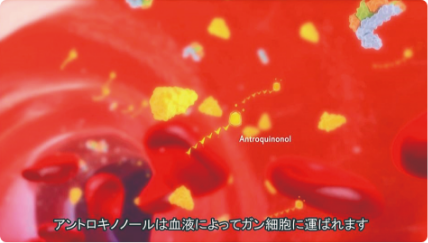
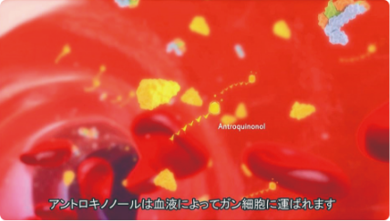
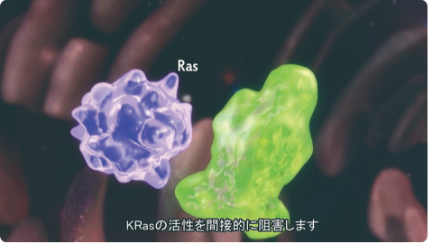
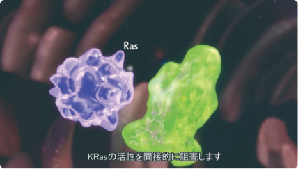

アントロキノノールには､３つの抗がん作用があります。
1.がん細胞増殖のスイッチを切る

アントロキノノールの最も独創的な働きは、がん細胞内部にある細胞増殖のスイッチをオフにすることです。そのスイッチが、細胞内にあるRasというタンパク質です。 Rasタンパクは細胞増殖のスイッチをオンにしたりオフにしたりする役割を果たしています。その増殖のスイッチは、寿命が来ればオフにならなければなりません。それがオンのままだと細胞は延々と増殖を繰り返してしまいます。 がん細胞はまさにそれで、Rasタンパクに異常が起き、オンのままになりオフにならないことがわかってきました。そこで研究チームは、このスイッチへの情報伝達のどこかを阻害することでがん細胞の増殖を止められないかと考えました。 アントロキノノールは、情報を伝えるファルネシルトランスフェラーゼという物質を阻害し、伝達経路を遮断して増殖のスイッチをオフにすることに成功したのです。 Rasタンパクのスイッチがオフのままであれば、細胞はもう増殖しません。こうしてがん細胞は分裂、増殖を停止し死滅してしまうことが実験で確かめられました。 増殖をやめた細胞が死滅するのは、プログラムによる細胞の自然死と同じです。このことからアントロキノノールは、がん細胞のアポトーシスを誘導する働きがあることがわかったのです。 またRasタンパクのスイッチがオフになることで、本来の細胞のプログラム通りオートファジー（自食作用）という機能が正常化し、がん細胞内のタンパク質が自己分解され、細胞は消滅します。 この研究成果は、2010年ドイツの医学薬学の専門誌「Cancer Chemotherapy and Pharmacology」に発表されました。

がん治療のカギを握るRasタンパク

細胞はタンパク質でできています。その中には､細胞の分化や増殖､死を決定づけるタンパク質も存在します。 こうしたタンパク質はやはり遺伝子の設計図をもとに作られており､遺伝子が傷つけば､作られるタンパク質の働きが異常をきたします。がん細胞では､遺伝子の傷がもとで作られるタンパク質が正しく働かなくなるために､細胞が寿命を過ぎても増殖を続けてしまいます。 この無限の増殖の原因となるのがRasタンパクです。 全ての細胞は､生まれた時から寿命がプログラムされており､その時がくれば自然に死滅し､新しい細胞がとって代わります。これが細胞のアポトーシスであり､正常な新陳代謝です。 がん細胞はこの自然死にいたるプログラムが壊れており､無限に増殖を続けてしまう細胞です。 さまざまながんにおいてRasタンパクの突然変異が見られます。研究によれば､膵臓癌（90%）､結腸癌（50%）､肺癌（30%）､卵巣癌（15%）､甲状腺癌（50%）､膀胱癌（6%）の患者に､Rasタンパクの突然変異が見られるようです。 これ以外にも全身性エリテマトーデス､皮膚癌､関節リウマチ､腎臓癌及びいくつかの白血病（Leukemia）でも､突然変異の比率が高いことがわかっています。（そのためアントロキノノール含有エキスは､全身性エリテマトーデスや関節リウマチ､腎臓病の症状を緩和するとしても注目されています） 今がん治療薬の開発にあたる世界の製薬メーカーが､Rasタンパクに照準を合わせて研究を行っています。アントロキノノールは､こうした開発の最前線にある物質なのです。
2.がん細胞のみに細胞毒性を発揮して死滅させ全身性の副作用を防ぐ

様々ながん細胞においてRasタンパクの異常がみられ、細胞増殖が止まらなくなっています。平均して３割のがんにおいてこうした異常がみられます。先の研究でこうしたがんに対しては、アントロキノノールが有効であることがわかりました。 それでは、Rasタンパクが正常ながん細胞ではどうなのでしょう。がん細胞であっても、Rasタンパクは正常で、細胞の増殖が必要な時にオンになり、不用な時にはオフになっているものもあります。 アントロキノノールはこうしたがん細胞に対しても有効で、がん細胞の特徴的なタンパクに反応し、増殖を阻害して死滅に導くことがわかりました。 結果、アントロキノノールが多数のがん細胞（脳腫瘍、リンパ腫、白血病、肺癌、乳癌、肝臓癌、膵臓癌、胃癌、直腸癌、前立腺癌及び膀胱癌等）に対して細胞毒性効果を有すること、そして、正常な組織細胞に対しては全身毒性を有さないことがわかりました。 これは従来の抗がん剤の抱える最大の問題、全身性の副作用を未然に回避できることを意味しています。副作用があるために困難だったがん治療が、アントロキノノールならば可能になるかもしれません。


 

 

3.がん化にかかわる慢性炎症を抑制する

がん細胞の発生には､慢性的な炎症が深く関わっていることが知られています。例えば舌癌や皮膚癌などでは､表皮の同じ箇所が傷つき炎症が慢性化することで､がんになりやすいことがわかっています。 目に見えない体内でも同様です。胃癌でも､内壁の粘膜が慢性的な炎症をおこしていると､がんがおこりやすいのです。そこにヘリコバクターピロリ菌が潜み､細胞のがん化がおきると考えられています。 またがん細胞自体にも､炎症性サイトカインを大量に放出して周辺の組織に炎症を起こす性質があります。これには新たながん細胞の発生を促すと同時に､がん細胞が増殖しやすい環境を整えているのです。 炎症がおこっている組織には､たくさんの炎症細胞が集まります。炎症細胞からはインターロイキンなどの炎症性サイトカインが放出され､組織を破壊してしまいます。そのため炎症が起こっている組織では､新しい細胞をつくるため細胞分裂が盛んになります。細胞分裂が盛んになると､新しい細胞のがん化も促進されます。 アントロキノノールは炎症細胞に入ると､炎症性サイトカインの産生を抑制します。さらに防御酵素のような抗酸化物質の産生を促すため､炎症は治まり､細胞のがん化を抑制することが可能になるのです。 このことはアントロキノノールが､がん細胞の増殖を妨げ､かつ新たながん細胞の発生を抑制する作用があることを意味しています。
以上の働きをまとめると、アントロキノノールの抗がん成分には、大きく４つの特長があることがおわかりいただけるでしょう。
がん細胞増殖のスイッチを切る
がん細胞のみに細胞毒性を発揮して死滅させる
抗がん剤による副作用の軽減効果
がん化にかかわる慢性炎症を抑制する